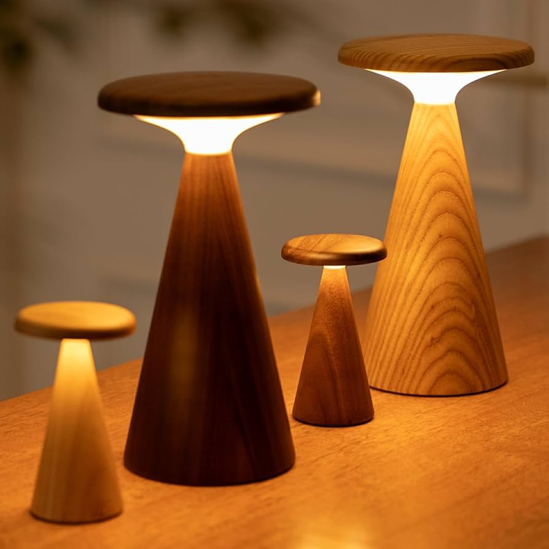

Why Wooden Lamps Are Perfect for Modern Homes
Wooden lamps have become an essential element in modern home decor because of their natural warmth and timeless appeal. Unlike artificial materials, wood adds a soft, organic touch that instantly makes any space feel more inviting and comfortable.
When placed beside a bed or in a living room corner, a wooden lamp creates a cozy atmosphere with gentle lighting. It blends perfectly with neutral tones, especially brown and beige themes, giving your home a premium and elegant look. If you want a balance between simplicity and luxury, wooden lamps are a perfect choice.